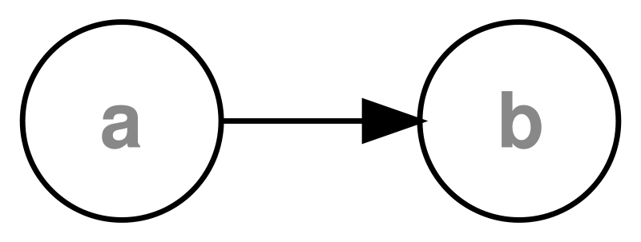

How Java Tools Work
Dependency Injection
What Problem Does This Solve?
Dependency Injection
is about dependencies
First create dependencies, then dependents
You have to create b before a
Cannot sort a cycle

What would you create first?
Implementation Details
XML Configuration
Early versions of spring only used this
separates configuration and implementation
This is what it looks like
<beans xmlns="http://www.springframework.org/schema/beans"
xmlns:xsi="http://www.w3.org/2001/XMLSchema-instance"
xsi:schemaLocation="http://www.springfw.org/schema/beans
http://www.springfw.org/schema/beans/spring-beans-3.0.xsd">
<bean id="XMLConverter" class="com.sth.XMLConverter">
<property name="marshaller" ref="xMarshaller" />
<property name="unmarshaller" ref="xMarshaller" />
</bean>
<bean id="xMarshaller" class="o.s.o.c.CastorMarshaller" />
</beans>
Implementation
How is XML turned into a running application?